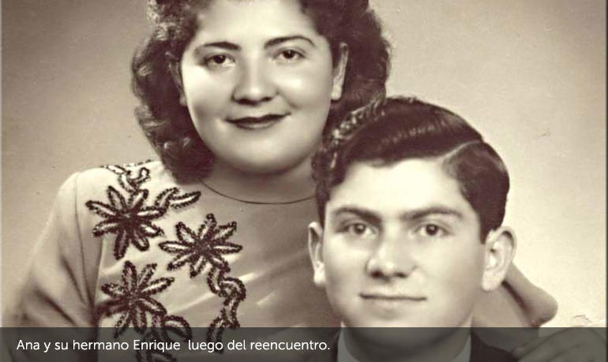
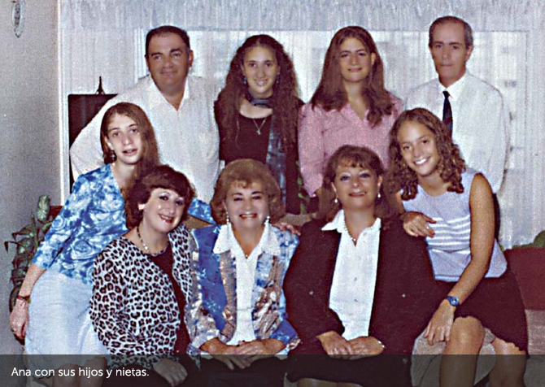

Ana logró sobrevivir a Auschwitz y otros campos.
Luego de la guerra, en 1947, viajó hacia Uruguay donde se reencontró después de varios años con su hermano Herschek, de quien no sabía si había sobrevivido.
“Ese fue el día más feliz de mi vida”, contaba Ana.
Ana se casó, tuvo dos hijos y cuatro nietas.
Consagró su vida a testimoniar lo que vivió en el Holocausto, relatando sus experiencias en diferentes ámbitos.
Escribió tres libros: "Un libro sin título",
"Luces y sombras después de Auschwitz" y
"Volver a vivir después de Auschwitz".
Falleció el 7 de enero de 2006, a la edad de 79 años.
